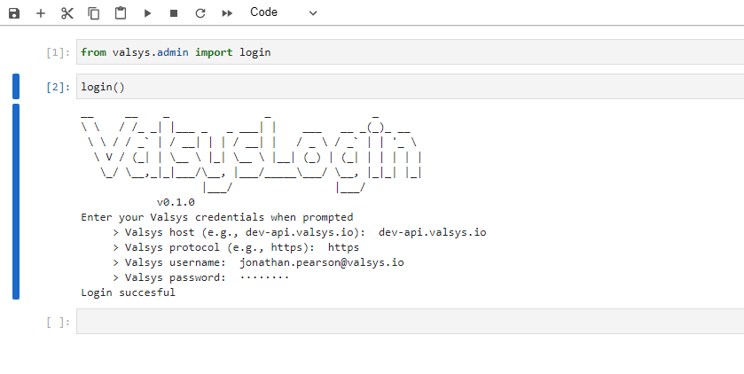

Getting started
Create a python virtual environment
We recommended to install the valsys library into a python virtual environment, rather than the global python kernel. This requires you have a system-wide installation of python (below we assume that python corresponds to a >=3.6.). Other environment management systems are available.
To create a python virtual environment in the current directory, execute
The activation of the virtual environment is slightly different on windows and mac:- If on windows,
- If on linux/mac
Now that you have an active virtual environment, install the valsys python package via
spark, or numpy) will also need to be installed into the environment
Login
Once the library has been installed, the first task is to login. From a python script (e.g., in the repl, or a jupyter notebook), execute
Alternatively, you could execute the following on a command line
Either way, you will be prompted to enter the following information:
- Valsys host: the base part of the valsys url (if unsure, contact valsys support)
- Valsys protocol: whether using
httporhttps. - Valsys username: this is the username used to login to the valsys system
- Valsys password: this is the password used to login to the valsys system
The login process will attempt to authenticate with these pieces of information.
Below we provide a screenshot of a jupyter notebook showing the expected screen and output.
